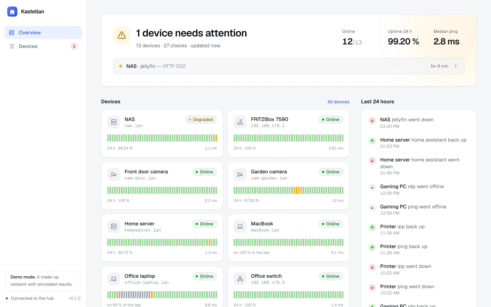
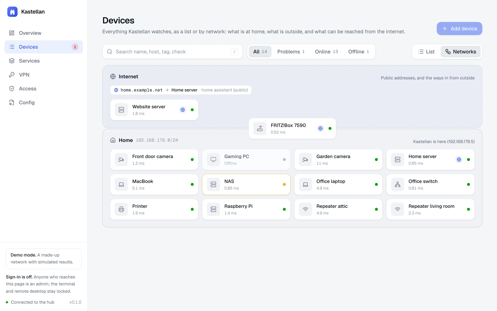
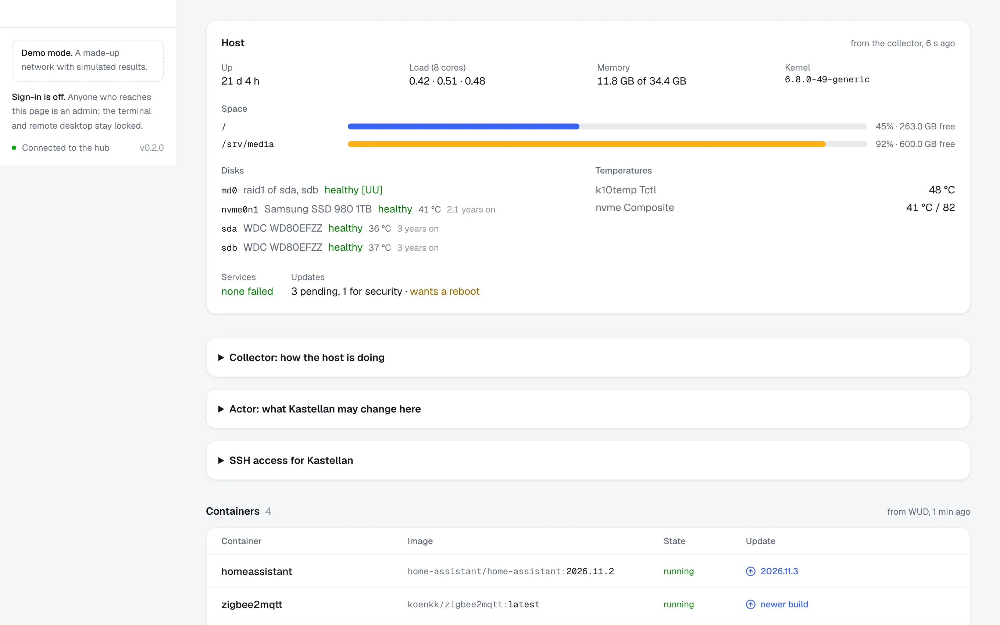

Open source · self-hosted · early preview
Your home network.
Monitor it. Manage it.
See what failed, get an alert, and manage devices with the permissions you choose. Runs on your hardware, reached over your LAN or VPN.
kastellan.lan


Routers
Mesh & access points
Switches
Servers & NAS
PCs
Laptops
Printers
Cameras
Overview
See what needs attention
Failed checks, how long they have been failing, and a day of uptime history for each device.
- Offline can be normal. Sleeping PCs and laptops do not raise device-down alarms.
- Related failures stay together. A failed router or UPS groups affected devices into one alarm.

Networks
Map devices and known exposure
Group configured devices by network and site. Public names and exposure settings highlight known ways in; this is not an external port scan.
- Inferred from addresses. Name networks and assign devices in config.yaml.
- Filter in place. Non-matching devices fade without changing the map.

Device
Check availability. Track changes.
Ping, TCP, HTTP, DNS and DHCP checks with latency, uptime and state history. Track reported software versions and TLS certificates.
- Open device pages through the hub as a signed-in admin.
- History survives restarts. See when a failure began.

Hosts
Host health. Selected actions.
Read Linux host health, containers, libvirt VMs and UPS status. Allow selected container and VM actions, apt updates or reboot on each host.
- A separate collector reads through a restricted SSH command.
- Permissions on the host limit the actor to installed abilities and allowed targets.

Plain files
One YAML file. No database server.
Edit config.yaml by hand or in the app; changes reload automatically. Check history is stored as daily CSV files.
config.yaml
devices:
fritzbox:
name: FRITZ!Box 7590
host: 192.168.178.1
kind: router
checks:
- ping
- http: https://192.168.178.1
nas:
host: nas.lan
kind: server
checks:
- ping
- tcp: 22
name: ssh
- http: http://nas.lan:8096/health
name: jellyfin
laptop:
host: laptop.lan
kind: laptop # off is fine
Roadmap
Built now. Planned next.
Features and demo screenshots describe main; published releases may lag behind. See the plan for details and proposed priorities.
In main
Checks & historyPing, TCP, HTTP, DNS, DHCP, versions, certificates and uptime.
Networks & alarmsNetwork map, discovery, grouped failures and notifications.
VulnerabilitiesNVD, OSV and CISA KEV lookups for recognized products and versions.
HostsHealth, UPSes, containers and VMs; tag upgrades and helper renewal.
Terminal & desktopBrowser SSH; RDP and VNC through Guacamole.
VPN & keysWireGuard and OpenVPN clients; SSH key sync and rotation.
Key ringsEncrypted secrets with configurable unlock policies.
Device pagesDevice web interfaces through an admin-only proxy.
OpenWrt & FRITZ!BoxWi-Fi, mesh, services, firmware, group settings and backups.
Vitals & logsCPU, memory, storage and temperature over 30 days; central logs and sign-ins.
Next
Router DNS setupApply the DNS settings currently shown as commands.
Roaming setupInstall roaming helpers across an OpenWrt group.
More sign-in sourcesOpenWrt web logins and OpenVPN client paths.
Later
Backups & jobsData backups with restic and scheduled work.
An outbound agentWindows, macOS and roaming laptops.
More discoveryARP and mDNS alongside router client lists.
Security
Limit access. Keep control.
A compromised hub inherits the access you grant it. Restricted helpers reduce that access; normal SSH can grant much more.
Behind your VPN
Use your LAN or VPN, with HTTPS for logins. Do not expose the hub publicly.
Restricted helpers
The collector reads; the actor gets selected abilities. Normal SSH retains the login's privileges, including root if granted.
Explicit trust
Host keys require approval. Collector, actor and restricted VPN keys run fixed commands; replacing helpers requires privileged access.
Opt-in automation
Automatic updates are limited to eligible containers on exposed devices with confirmed serious vulnerabilities.
Try it
Run the demo in a minute
A simulated home network with a day of history. No devices on your network are contacted.
For your network, follow the quick start. The command here runs release 0.17.1; build main for unreleased features.
Terminal
docker run --rm -p 8100:8100 -e KASTELLAN_DEMO=1 \
ghcr.io/andiwand/kastellan:0.17.1
# then open http://localhost:8100